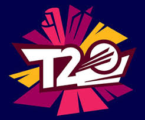

Twenty20 cricket or Twenty-20 (often abbreviated to T20), is a shortened format of cricket. At the professional level, it was originally introduced by the England and Wales Cricket Board (ECB) in 2003 for the inter-county competition.[1] In a Twenty20 game the two teams have a single innings each, which is restricted to a maximum of 20 overs. Together with first-class and List A cricket, Twenty20 is one of the three current forms of cricket recognised by the International Cricket Council (ICC) as being at the highest international or domestic level. A typical Twenty20 game is completed in about three hours, with each innings lasting around 90 minutes and an official 10 minute break between the innings. This is much shorter than previous forms of the game, and is closer to the timespan of other popular team sports. It was introduced to create a fast-paced game that would be attractive to spectators at the ground and viewers on television.
The game has succeeded in spreading around the cricket world. On most international tours there is at least one Twenty20 match and all Test-playing nations have a domestic cup competition. West Indies are the reigning world champions, winning the 2016 competition.